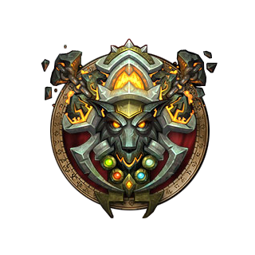
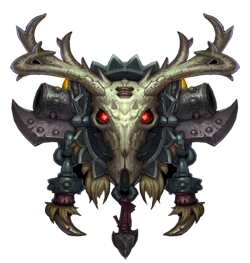
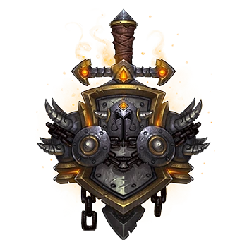
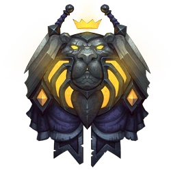
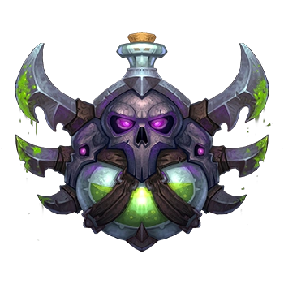
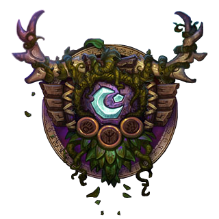

Caballero de la Muerte (Death Knight): El Caballero de la Muerte es una clase heroica disponible para los jugadores a partir del nivel 55, y está disponible para todas las razas a partir de la expansión "Wrath of the Lich King". Los Caballeros de la Muerte son guerreros corruptos por el poder del Rey Exánime y poseen habilidades de combate cuerpo a cuerpo, magia oscura y poderes no-muertos. Los Caballeros de la Muerte tienen tres especializaciones distintas: Sangre (Blood): La especialización Sangre se centra en el tanqueo y la resistencia. Los Caballeros de la Muerte Sangre tienen habilidades para absorber daño y sanarse a sí mismos. Pueden convocar escudos de sangre y usar magia de muerte para aumentar su supervivencia en el campo de batalla. Escarcha (Frost): La especialización Escarcha se enfoca en el daño cuerpo a cuerpo y en el control. Los Caballeros de la Muerte Escarcha pueden blandir armas de dos manos y desatar una ráfaga de daño escalofriante. Además, tienen habilidades para ralentizar y congelar a sus enemigos, lo que les permite controlar el campo de batalla. Profano (Unholy): La especialización Profano se especializa en el daño a través de la enfermedad y el uso de esbirros. Los Caballeros de la Muerte Profano pueden invocar y controlar esbirros no-muertos para luchar a su lado y desencadenar plagas y enfermedades en sus enemigos. Los Caballeros de la Muerte también tienen acceso a una serie de habilidades únicas, como la habilidad de muerte viviente, que los protege de los efectos de control durante un tiempo limitado, y la habilidad de resurrección de aliados caídos en combate. Además, los Caballeros de la Muerte cuentan con un recurso especial llamado Poder Rúnico, que se utiliza para activar habilidades y desencadenar ataques poderosos. También utilizan una serie de runas que se recargan con el tiempo para lanzar hechizos y habilidades. Cabe destacar que los Caballeros de la Muerte son una clase única y tienen una historia y mecánicas de juego específicas. Pueden ser una opción emocionante para aquellos jugadores que buscan un estilo de juego diferente y desean explorar el lado oscuro del mundo de Warcraft.
Chamán (Shaman): El Chamán es una clase lanzadora de hechizos que tiene una fuerte conexión con los elementos de la naturaleza. Los Chamanes pueden invocar y canalizar poderes elementales para curar a sus aliados, infligir daño a sus enemigos y proporcionar apoyo a su grupo. Los Chamanes tienen tres especializaciones distintas: Elemental: La especialización Elemental se centra en el dominio de los elementos de fuego, tierra y aire. Los Chamanes Elemental pueden lanzar poderosos hechizos de daño a distancia que causan estragos en sus enemigos. Pueden invocar rayos y explosiones de lava para infligir daño masivo en áreas amplias. Mejora: La especialización Mejora se enfoca en el combate cuerpo a cuerpo y el uso de armas. Los Chamanes Mejora pueden mejorar sus armas con energía elemental y lanzarse al combate cuerpo a cuerpo. Tienen habilidades para golpear con ráfagas de ataques rápidos y causar daño físico significativo. Restauración: La especialización Restauración se especializa en la curación y el apoyo a sus aliados. Los Chamanes Restauración pueden sanar heridas y enfermedades utilizando magia de la naturaleza. También pueden invocar tótems para proporcionar beneficios y utilidad a su grupo, como curaciones adicionales, resistencia a daños o aumento de estadísticas. Los Chamanes también tienen habilidades específicas de clase, como la capacidad de cambiar de forma a lobo para moverse rápidamente por el mundo, la capacidad de invocar tótems para diversas funciones y la capacidad de lanzar hechizos de sanación y purificación. Además de su capacidad para infligir daño y curar, los Chamanes tienen utilidad adicional en el juego. Pueden eliminar efectos negativos de los aliados, proporcionar resistencias elementales y ralentizar a los enemigos con hechizos de control.
Cazador (Hunter): El Cazador es una clase de combate a distancia que se especializa en el uso de armas de fuego, arcos y bestias. Los Cazadores son maestros en el rastreo y la caza de presas, tanto animales como enemigos. Los Cazadores tienen tres especializaciones distintas: Dominio de bestias (Beast Mastery): La especialización Dominio de bestias se centra en el vínculo con sus mascotas y la habilidad para desatar su poder. Los Cazadores Dominio de bestias tienen una fuerte conexión con las bestias salvajes, y pueden invocar y controlar mascotas poderosas para luchar a su lado. También tienen habilidades para aumentar el daño de sus mascotas y mejorar su propia capacidad de supervivencia. Puntería (Marksmanship): La especialización Puntería se enfoca en el tiro preciso y el daño a distancia. Los Cazadores Puntería son expertos en disparos certeros con armas de fuego o arcos. Pueden causar daño de manera constante y precisa, y tienen habilidades para ralentizar a sus enemigos y realizar disparos críticos devastadores. Supervivencia (Survival): La especialización Supervivencia se especializa en el combate cuerpo a cuerpo y el uso de trampas y habilidades de supervivencia. Los Cazadores Supervivencia pueden usar armas de combate cuerpo a cuerpo, como lanzas, y desencadenar ataques rápidos y precisos. También tienen habilidades para colocar trampas y controlar a sus enemigos. Los Cazadores tienen acceso a una serie de habilidades únicas, como el rastreo de bestias para detectar criaturas ocultas, la capacidad de disparar a larga distancia sin penalizaciones y la capacidad de lanzar trampas para controlar y ralentizar a los enemigos. Además, los Cazadores tienen la capacidad de domesticar y entrenar mascotas, que los acompañan en sus aventuras y luchan a su lado. Cada tipo de mascota tiene habilidades y características diferentes, lo que permite a los Cazadores adaptar su estilo de juego según la situación. Los Cazadores también tienen la capacidad de utilizar habilidades de sigilo y camuflaje para acechar a sus enemigos y obtener ventajas tácticas.
Guerrero (Warrior): El Guerrero es una clase de combate cuerpo a cuerpo altamente versátil y resistente. Los Guerreros son maestros en el uso de armas y armaduras, lo que les permite adaptarse a diferentes roles en el campo de batalla y desempeñar diversas funciones en un grupo. Los Guerreros tienen tres especializaciones distintas: Armas (Arms): La especialización Armas se centra en el combate con una sola arma, ya sea una espada, un hacha o una maza. Los Guerreros Armas son expertos en el daño explosivo y causan grandes cantidades de daño físico con cada golpe. También tienen habilidades para controlar el campo de batalla y ralentizar a sus enemigos. Furia (Fury): La especialización Furia se basa en la rápida y frenética velocidad de ataque. Los Guerreros Furia pueden blandir armas duales y desatar una lluvia de ataques rápidos. Son conocidos por su capacidad para generar ira rápidamente y desencadenar ráfagas de daño físico. También tienen habilidades para aumentar su velocidad de ataque y regenerar salud durante el combate. Protección (Protection): La especialización Protección se centra en el tanqueo y la protección de sus aliados. Los Guerreros Protección son expertos en absorber daño y mantener la atención de los enemigos. Pueden usar un escudo y habilidades defensivas para mitigar el daño y proteger al grupo. También tienen habilidades para generar amenaza y mantener el aggro de los enemigos. Los Guerreros tienen acceso a una amplia variedad de habilidades de combate, como embestidas, golpes contundentes y ataques devastadores. También tienen habilidades de control de masas, como lanzar redes o aturdir a los enemigos, así como habilidades de interrupción para evitar que los hechiceros lancen sus hechizos. Además, los Guerreros pueden elegir entre varias especializaciones de armas, lo que les permite personalizar aún más su estilo de juego y adaptarse a diferentes situaciones de combate.
Paladín (Paladin): El Paladín es una clase versátil que combina habilidades de combate cuerpo a cuerpo con el poder divino. Los Paladines son guerreros santos que luchan por la justicia y protegen a sus aliados con una combinación de poder divino y habilidades de sanación. Los Paladines tienen tres especializaciones distintas: Sagrado (Holy): La especialización Sagrado se centra en la sanación y el apoyo a sus aliados. Los Paladines Sagrados son expertos en curar heridas y mantener a su grupo con vida. Tienen una amplia gama de hechizos de sanación y habilidades para proteger y fortalecer a sus aliados. Protección (Protection): La especialización Protección se enfoca en el tanqueo y la protección. Los Paladines Protección son expertos en absorber daño y mantener la atención de los enemigos. Pueden equiparse con un escudo y habilidades defensivas para mitigar el daño y proteger al grupo. También tienen habilidades para generar amenaza y mantener el aggro de los enemigos. Reprensión (Retribution): La especialización Reprensión se centra en el combate cuerpo a cuerpo y el daño explosivo. Los Paladines Reprensión son expertos en el uso de armas y habilidades sagradas para infligir daño físico a sus enemigos. También tienen habilidades para aumentar su daño y golpear con fuerza a sus oponentes. Los Paladines tienen acceso a una amplia gama de habilidades divinas, como escudos protectores, bendiciones para fortalecer a los aliados y habilidades de sanación para curar heridas. También tienen habilidades para purificar y eliminar efectos negativos, así como habilidades para protegerse y proteger a sus aliados de daño mágico. Además, los Paladines tienen la capacidad de invocar monturas y de utilizar sellos y juicios para potenciar sus ataques. También tienen la capacidad de resucitar a los aliados caídos en combate y de protegerse a sí mismos y a su grupo con burbujas divinas y bendiciones.
Mago (Mage): El Mago es una clase lanzadora de hechizos que se especializa en el dominio de la magia arcana y elemental. Los Magos son maestros de los elementos y pueden invocar poderosos hechizos para causar daño a distancia, controlar el campo de batalla y alterar la realidad misma. Los Magos tienen tres especializaciones distintas: Arcano (Arcane): La especialización Arcano se centra en el dominio de la magia arcana pura. Los Magos Arcanos son expertos en lanzar hechizos explosivos y causar daño masivo a sus enemigos. También tienen habilidades para aumentar su maná y regeneración, lo que les permite lanzar ráfagas de hechizos poderosos. Fuego (Fire): La especialización Fuego se basa en el uso de la magia del fuego. Los Magos de Fuego pueden lanzar bolas de fuego, explosiones y llamaradas para infligir daño a sus enemigos. También tienen habilidades para aumentar el daño crítico y causar efectos de quemadura a lo largo del tiempo. Escarcha (Frost): La especialización Escarcha se enfoca en la magia del frío y el hielo. Los Magos de Escarcha pueden congelar a sus enemigos, ralentizar su velocidad de movimiento y causar daño con hechizos de hielo. También tienen habilidades para generar acumulaciones de energía y lanzar poderosos ataques congelantes. Los Magos tienen acceso a una amplia gama de hechizos y habilidades, como teletransportación para viajar rápidamente, barreras de absorción para protegerse y habilidades de control de masas, como congelar a los enemigos en su lugar. Además de su capacidad para causar daño a distancia, los Magos también tienen utilidad adicional en el juego. Pueden crear comida y bebida mágica para restaurar el maná y la salud, pueden abrir portales para facilitar los viajes del grupo y pueden desencantar objetos mágicos para obtener materiales útiles.

Pícaro (Rogue): El Pícaro es una clase de combate cuerpo a cuerpo que se especializa en el sigilo, el engaño y los ataques rápidos. Los Pícaros son maestros en el arte del asesinato, la infiltración y el combate sorpresa. Los Pícaros tienen tres especializaciones distintas: Asesinato (Assassination): La especialización Asesinato se centra en el daño con veneno y los ataques furtivos. Los Pícaros Asesinato son expertos en infligir daño a través de la aplicación de venenos mortales y el aprovechamiento de los momentos de vulnerabilidad de sus enemigos. También tienen habilidades para aumentar el daño crítico y causar sangrado a lo largo del tiempo. Forajido (Outlaw): La especialización Forajido se enfoca en el combate con dos armas y en el uso de habilidades de saqueo y piratería. Los Pícaros Forajidos son expertos en el combate cuerpo a cuerpo y pueden desencadenar ráfagas de ataques rápidos y precisos. También tienen habilidades para aumentar su daño y obtener ventajas tácticas en el combate. Sutileza (Subtlety): La especialización Sutileza se especializa en el sigilo y los ataques sorpresa. Los Pícaros Sutileza son maestros del sigilo y la infiltración. Pueden aparecer repentinamente detrás de sus enemigos y realizar ataques devastadores. También tienen habilidades para ralentizar a los enemigos, desorientarlos y desaparecer de la vista. Los Pícaros tienen acceso a una amplia gama de habilidades de sigilo, como la capacidad de volverse invisibles, desaparecer del combate y moverse rápidamente por el terreno. También tienen habilidades de control de masas, como aturdir a los enemigos y envenenarlos. Además, los Pícaros son expertos en el uso de habilidades de desarme y bloqueo, lo que les permite desactivar trampas y abrir cerraduras para acceder a tesoros ocultos. Los Pícaros también pueden elegir un estilo de combate dual, lo que les permite usar una combinación de armas y habilidades para adaptarse a diferentes situaciones de combate.
Druida (Druid): El Druida es una clase versátil que puede asumir diferentes formas y tiene acceso a una amplia gama de habilidades mágicas y naturales. Los Druidas son defensores de la naturaleza y pueden adaptarse a diferentes roles en el combate, como tanque, sanador, lanzador de hechizos de daño a distancia y luchador cuerpo a cuerpo. Los Druidas tienen cuatro especializaciones distintas: Equilibrio (Balance): La especialización Equilibrio se centra en el lanzamiento de hechizos de daño a distancia y en el equilibrio entre las energías lunares y solares. Los Druidas Equilibrio pueden lanzar hechizos que infligen daño arcano y de naturaleza a sus enemigos. También tienen habilidades para aumentar su poder de hechizo y controlar el campo de batalla con efectos de desorientación y ralentización. Feral: La especialización Feral se enfoca en el combate cuerpo a cuerpo en forma de felino o oso. Los Druidas Ferales pueden asumir la forma de un felino para infligir daño rápido y ágil, o la forma de un oso para tanquear y absorber daño. Tienen habilidades para aumentar su velocidad de ataque, evadir ataques y causar sangrado a lo largo del tiempo. Restauración (Restoration): La especialización Restauración se especializa en la sanación y el apoyo a sus aliados. Los Druidas Restauración son expertos en curar heridas y mantener a su grupo con vida. Tienen una amplia gama de hechizos de sanación y habilidades para proteger y fortalecer a sus aliados. También pueden asumir formas de árbol para aumentar su capacidad de sanación. Guardián (Guardian): La especialización Guardián se enfoca en el tanqueo y la protección. Los Druidas Guardianes son expertos en absorber daño y mantener la atención de los enemigos. Pueden asumir la forma de un oso formidable y tienen habilidades para mitigar el daño y proteger al grupo. También tienen habilidades para generar amenaza y mantener el aggro de los enemigos. Los Druidas tienen acceso a una amplia variedad de habilidades basadas en la naturaleza, como curaciones, desplazamientos rápidos por el mapa, formas animales para aumentar su velocidad y habilidades para controlar el entorno, como raíces enredadoras y huracanes. Además, los Druidas pueden utilizar diferentes formas animales, como el gato, el oso, el lobo y el cuervo, para obtener diferentes beneficios y habilidades según la situación.
 Ir arriba